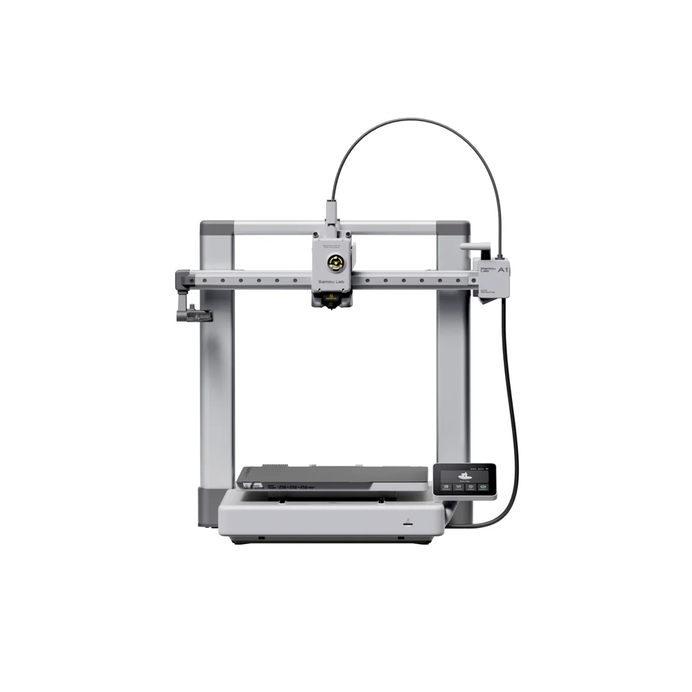

Lo que la garantía de Bambu Lab en México no cubre
Bambu Lab da un año de garantía en México, pero varias de las piezas que más se gastan no entran. Aquí está el resumen, en corto, para que sepas a quién acudir primero.

La garantía en México, en tres puntos
Un año de garantía limitada
La da Bambulab MX, con sede en Querétaro, y se suma a tus derechos como consumidor. Según Bambu Lab, en México el servicio en garantía no te cobra envío ni manipulación.
Si compraste con un revendedor
Aplica la garantía de esa tienda. Bambu Lab te ayuda con problemas técnicos y refacciones, pero las devoluciones y los cambios van con el vendedor.
Solo cuentan ciertos comprobantes
Bambu Lab solo acepta comprobantes de compra de Bambu Lab o de sus distribuidores autorizados. La lista está en su página de distribuidores.
El proceso con Bambu Lab
- Abres un chat o un ticket
Con el soporte de Bambu Lab.
- Mandas tus pruebas
Comprobante de compra, número de serie y fotos o video de la falla.
- Diagnóstico a distancia
Bambu Lab revisa primero el caso de forma remota.
- Pieza o reparación
Te mandan la refacción con una guía para que la instales, o coordinan la reparación o el cambio del equipo. Para un cambio por adelantado piden un depósito.
Lo que queda fuera de la garantía
Bambu Lab publica una tabla por serie. En la de la serie A1, estas piezas aparecen así:
| Pieza | Garantía |
|---|---|
| Hotend y todas sus partes | Sin garantía |
| Engranes del extrusor | Sin garantía |
| Cortador | Sin garantía |
| Tubos de PTFE | Sin garantía |
| Placas de impresión | Sin garantía |
| Unidad del extrusor | 3 meses |
Otros modelos tienen su propia tabla en el sitio de Bambu Lab. Revisa la de tu impresora antes de reclamar.
Si la garantía no te cubre, aquí la reparamos
La pieza no entra en la garantía, ya se te pasó el año o no puedes esperar: ahí entramos nosotros.
Los mismos precios de siempre
Diagnóstico $300 MXN. Mano de obra $700 MXN, o $400 MXN si el diagnóstico ya se hizo aquí. Refacciones aparte, siempre con tu autorización.
Fotos de cada paso
Ves lo que encontramos y lo que hicimos en la página de tu cita.
Garantía de 90 días
Sobre la reparación, desde que te entregamos la impresora. Si vuelve la misma falla, la corregimos sin costo, salvo mal uso.
En el taller o por paquetería
Recepción con cita en Benito Juárez, CDMX, o mándala desde cualquier estado por paquetería.
¿Lo que falló es el hotend de tu A1? Lo vendemos: hotends para A1 y A1 mini. ¿No falla, pero ya tiene muchas horas? Mira el mantenimiento preventivo.
Garantía de Bambu Lab: lo que más nos preguntan
¿La garantía de Bambu Lab cubre el hotend de la A1?
No. En la tabla de garantía de la serie A1 de Bambu Lab México, el hotend y todas sus partes aparecen «sin garantía». Lo mismo pasa con los engranes del extrusor, el cortador, los tubos de PTFE y las placas. La unidad del extrusor tiene 3 meses.
¿Qué hago si compré mi Bambu en una tienda no autorizada?
Si la compraste con un revendedor, aplica la garantía de esa tienda: empieza por ahí. Bambu Lab solo acepta comprobantes de Bambu Lab o de sus distribuidores autorizados; la lista está en su página de distribuidores. Si nadie te la cubre, la reparamos aquí con los precios de siempre.
¿Cuánto dura la garantía de Bambu Lab en México?
Un año de garantía limitada, además de tus derechos como consumidor. La da Bambulab MX, con sede en Querétaro. Si compraste con un revendedor, aplica la garantía de esa tienda.
¿Cómo se reclama la garantía de Bambu Lab?
Por chat o con un ticket. Te piden el comprobante de compra, el número de serie y fotos o video de la falla. Primero hacen un diagnóstico a distancia. Después te mandan la pieza con una guía para instalarla, o coordinan la reparación o el cambio del equipo.
¿La garantía no te cubre?
Agenda el día y la hora para dejarla. Recepción de lunes a viernes de 12:00 a 18:00, en Av. División del Norte 1354, Piso 1, Letrán del Valle, Benito Juárez, CP 03650.